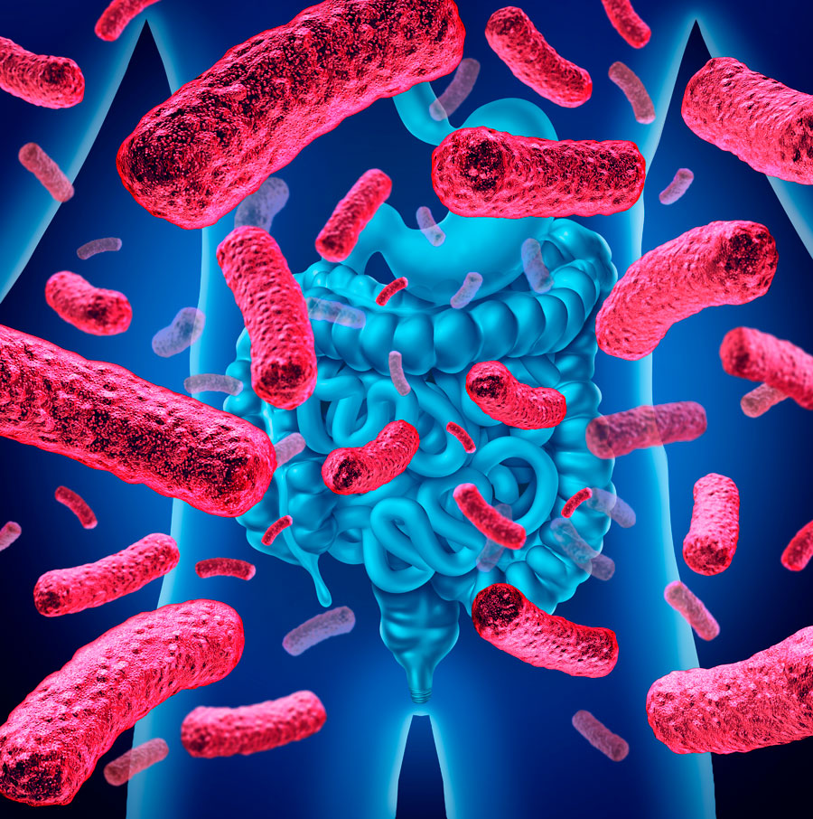
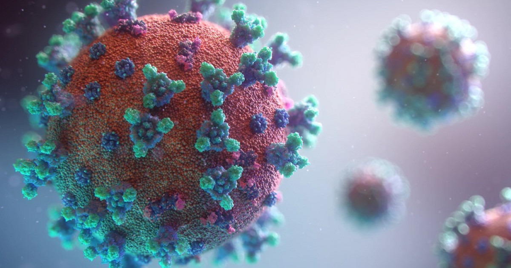
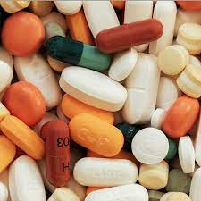
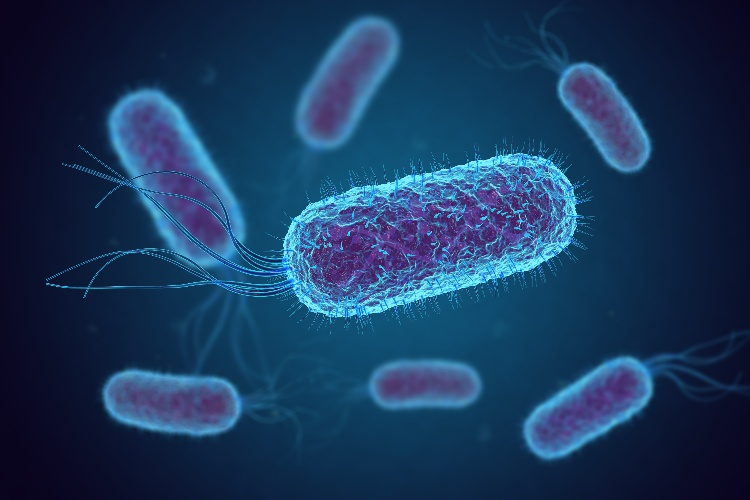
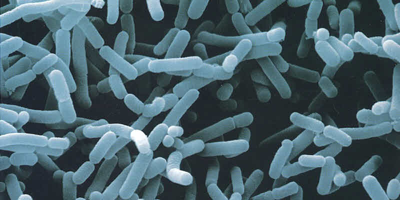

Virus: Son partículas infecciosas que consisten en material genético envuelto en una cápsula proteica. Los virus requieren de una célula huésped para reproducirse y pueden causar diversas enfermedades en humanos, animales y plantas.

Hongos: Son organismos eucariotas que incluyen levaduras, mohos y setas. Algunos hongos son beneficiosos, como los utilizados en la producción de alimentos, mientras que otros pueden ser patógenos y causar infecciones.

Protozoos: Son organismos eucariotas unicelulares que se encuentran en ambientes acuáticos y en el suelo. Algunos protozoos son parásitos y pueden causar enfermedades como la malaria y la enfermedad del sueño.

Microbiota: Se refiere a la comunidad de microorganismos que habita en un determinado ambiente, como el microbioma humano, que es la población de microorganismos que reside en nuestro cuerpo. La microbiota desempeña un papel importante en la salud, la digestión y la protección contra patógenos.

Patógenos: Son microorganismos que tienen la capacidad de causar enfermedades en sus hospedadores. Pueden ser bacterias, virus, hongos o protozoos que infectan y dañan los tejidos de los seres vivos.

Antibióticos: Son sustancias químicas utilizadas para tratar infecciones bacterianas. Los antibióticos actúan matando o inhibiendo el crecimiento de las bacterias, pero no son efectivos contra virus u otros microorganismos.

Resistencia a los antimicrobianos: Es la capacidad de los microorganismos para resistir los efectos de los antimicrobianos, como los antibióticos. La resistencia a los antimicrobianos es un problema de salud global y puede hacer que las infecciones sean difíciles de tratar.

Fermentación: Es un proceso metabólico que los microorganismos, como las bacterias y las levaduras, utilizan para obtener energía en ausencia de oxígeno. La fermentación se utiliza en la producción de alimentos, como el yogur y el pan, y en la producción de bebidas alcohólicas.

Estos conceptos son solo una introducción a la amplia variedad de temas relacionados con los microorganismos. La microbiología es un campo de estudio extenso y fascinante que abarca muchos aspectos de la vida en nuestro planeta.